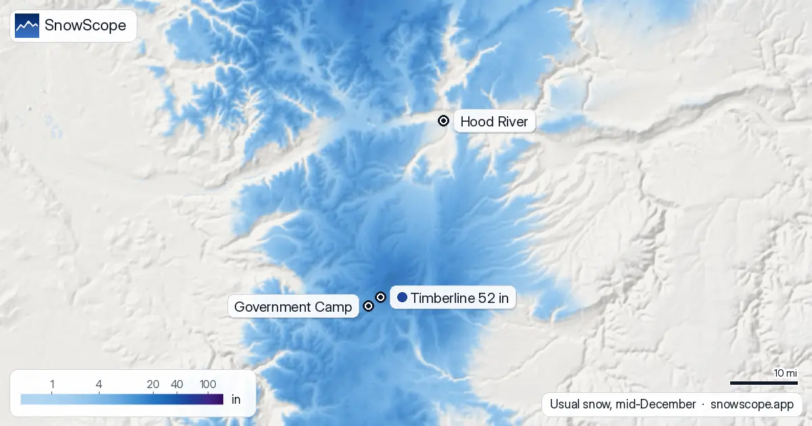
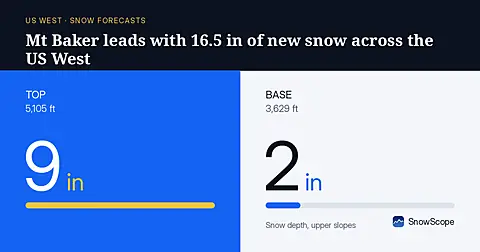

Timberline on Mt. Hood in December: cheaper tickets and snow odds
Timberline is not a cheap mountain if you walk up on a holiday Saturday. But it has the deepest typical mid-December snow of the Northwest areas we compared, and two ticket choices that bring the price down a lot.
See the live snow forecast for Timberline Lodge Ski Area in the SnowScope appSnow depth, powder alerts and the 3D map, free.
Two mountains in one
Timberline starts low and ends high. On our mapping, the lifts run from about 3,980 ft (1,214 m) up to 8,480 ft (2,586 m) on the south side of Mt. Hood, with 12 lifts and about 33 mi (53 km) of runs. That height range matters in December, because the bottom and the top live in different seasons.
On a typical 15 December, the base has 17 in (42 cm), mid-mountain at about 6,230 ft (1,900 m) has 52 in (132 cm), and the top 58 in (147 cm). In 11 % of past winters the base was almost bare on that date, while the upper mountain was nearly always skiable.

The four prices
For 2026/2027, an adult (ages 19-64) full-day ticket is $161 on peak days and $129 off-peak. The afternoon ticket, from noon to close, is $124 on peak days and $96 off-peak. Peak days include weekends and the holiday period from December 21 to January 1.
So the cheapest real December ski day here is an off-peak weekday afternoon at $96, early in the month. A full holiday-week day costs $161.

How reliable is December up high?
At mid-mountain, the share of winters with good snow (a weekly mean of 20 in, 50 cm, or more) is 76 % in the first week of December, 74 % in the second and 85 % in each of the two weeks before New Year. On 15 December, 78 % of winters had 20 in (50 cm) or more there.
The range is wide. A big December (one winter in ten) had 111 in (281 cm) at mid-mountain on the 15th; a lean one only 10 in (26 cm). Last winter mid-mountain was bare on that date, a reminder that Mt. Hood can also start late.
Compared with White Pass and Mt. Bachelor
White Pass in Washington sells online from $69 off-peak and $89 peak, rising to $99 and $119, with 40 in (102 cm) at mid-mountain on a typical 15 December and 87 % of winters above 20 in.
Mt. Bachelor, the other big Oregon volcano, had 55 in (139 cm) at mid-mountain on a typical 15 December on our history and 83 % of winters above 20 in. We did not compare its prices here. If deep December snow is the goal, Timberline and Bachelor are close; if price is the goal, an off-peak afternoon at Timberline or an early-booked weekday at White Pass wins.
Tips for skiers
- Ski an off-peak weekday afternoon for the $96 ticket, and avoid December 21 to January 1 if you are counting dollars.
- Expect thin or no snow at the lowest lifts in early December: plan to ride up.
- Government Camp is the last stop before the lodge: carry chains and check the road conditions on US-26.
- Check the snow map in the week before you go: Mt. Hood swings between big and bare Decembers.
References and credits
- Timberline Lodge, winter lift tickets 2026/2027 (official) www.timberlinelodge.com/activities/winter/lift-tickets/
- White Pass, online day tickets 2026/27 (official) skiwhitepass.com/online-day-ticket-sales
- OpenSkiMap (mapped lifts and runs) openskimap.org/
- avalanche.org, US avalanche centers and forecasts avalanche.org/
About these numbers
Snow numbers: SnowScope snow history, 46 past winters (1980-81 to 2025-26) at the base, mid-mountain and top heights given, a reconstruction of past snow for an area corrected for height (ERA5-Land based; Snow_Hydro 1 km for Morocco), not the ski area's own snow reports. Current snow: the SnowScope snow map. Lifts, runs and heights: OpenSkiMap mapping. Prices: the official pages listed below, read on 13 November 2026; dynamic prices change with the date and with demand.
Official avalanche bulletins: avalanche.org (US national portal)
Cite this report
For research, teaching or the press: the numbers and charts are free to reuse under CC BY 4.0 with this citation.
SnowScope (2026), Timberline on Mt. Hood in December: cheaper tickets and snow odds, https://snowscope.app/blog/en/2026/11/timberline-mt-hood-december-ski-on-a-budget.html, accessed 2026-11-15
SnowScope (Atlas Labs). (2026, November 15). Timberline on Mt. Hood in December: cheaper tickets and snow odds. SnowScope snow reports. https://snowscope.app/blog/en/2026/11/timberline-mt-hood-december-ski-on-a-budget.html
BibTeX
@misc{snowscope2026timberlinemthooddecember,
author = {{SnowScope (Atlas Labs)}},
title = {Timberline on Mt. Hood in December: cheaper tickets and snow odds},
year = {2026},
month = nov,
howpublished = {\url{https://snowscope.app/blog/en/2026/11/timberline-mt-hood-december-ski-on-a-budget.html}},
note = {Published 2026-11-15 09:34 UTC; accessed 2026-11-15}
}· CC BY 4.0 · Methods, data and tools →
Timberline Lodge Ski Area: snow and temperature by height, this winter vs last (tools) →
Follow Timberline Lodge Ski Area
Free: a message when fresh snow is coming, and the forecast every morning.
More snow reports

Telluride holds 115 cm (45 in) on 8 November. The freezing level climbs to 4,280 m (14,042 ft) on 9 November, bringing rain-on-snow risk to the highest slopes.

Wolf Creek leads with mid-slope snow at 361% of normal for November 10, well ahead of typical and signaling significant water storage in the mountains.

Mt Baker will receive 16.5 in (42 cm) of new snow through November 8, leading the US West, based on our model run on November 5.